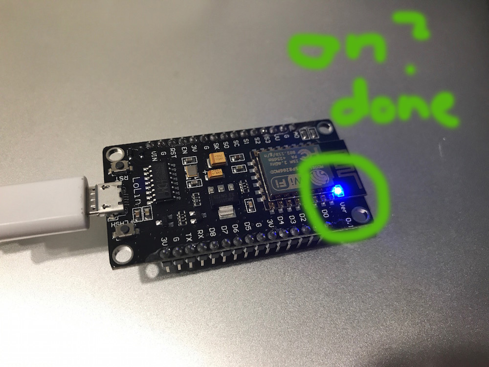

6.S063 Engineering Interactive Technologies (fall 2017)
HW3: Connect your micro-controller to Wifi
Deadline: due Wednesday (September 13, 2017) at 1pm, upload here
Deliverables:
- short video (use your smart phone) showing how you enter code into the WebREPL console and it lights up the LED on the controller, upload video here
Questions?
- post on piazza
- go to a TA office hour for building/coding oriented questions (tbd)
- go to an instructor office hour for logistical questions and grading (mondays, 4-5pm, 32-211)
- do not send us emails
Task:
Make the blue LED light up over Wifi.Setup How-To for Mac (Stefanie Mueller, on OSX Yosemite)
- Plug your microcontroller to your computer via USB to power it.
- Enable WiFi on the microcontroller:
- Connect to the microcontroller's terminal using screen (see HW2 for how to get there).
- Type:
import webrepl_setupinto the python console. - Press "E" to enable WebREPL, choose a password, and reboot.
- On your computer you should see a network called 'MicroPython-xxxxxx' where the x’s are replaced with part of the MAC address of your device
- The password for the WiFi is: micropythoN
- Connect to this website: http://micropython.org/webrepl/
- If this website doesn't load, you may need to download a local client: https://github.com/micropython/webrepl.
- Download the files from the WebREPL GitHub repo and open "webrepl.html" in your browser.
- When you press connect, it should say "WebREPL Connected." You'll need to type in the password you set before.
- Use the same code as HW2 to make the LED blink!

Setup How-To for Windows (Jared Counts, on Windows 10)
- Plug your microcontroller to your computer via USB to power it.
- Enable WiFi on the microcontroller:
- Terminal into the microcontroller (using PuTTY, for example)
- Enter the command
import webrepl_setupinto the python console. - Press "E" to enable WebREPL, choose a password, and reboot.
- "MicroPython-xxxxxx" should show up in your scanned WiFi networks. Connect to that. Note, the "xxxxxx" is part of your microcontroller's MAC address, so this sequence will be the same every time you want to connect. The password is "micropythoN" by default.
- Sometimes the Wifi shows up, but it never connects (stalling on "Checking network requirements"). To resolve this, you can manually connect to the board:
- Open your Control Panel.
- Goto "Network and Sharing Center"
- Click "Set up a new connection or network"
- Select "Manually connect to a wireless network"
- Type in the network name as it shows up in the Wifi taskbar popup.
- For security, select "WPA-2 Personal" and use "micropythoN" for the password (you may need to try out the password you set during Webrepl setup if this doesn't work)
- Click next and connect!
- Sometimes the Wifi shows up, but it never connects (stalling on "Checking network requirements"). To resolve this, you can manually connect to the board:
- Connect to this website: http://micropython.org/webrepl/
- If this website doesn't load, you may need to download a local client: https://github.com/micropython/webrepl.
- Download the files from the WebREPL GitHub repo and open "webrepl.html" in your browser.
- When you press connect, it should say "WebREPL Connected. you'll need to type in the password you set before.
- Use the same code as HW2 to make the LED blink!